Week 18 — Public demo mode
Before this week, every course route required a JWT — a visitor with no account had nothing to look at except a login form. This week adds a second, unauthenticated path through the same course data: one course (AI Engineering From Scratch) is flagged isPublic = true on the Course row, a brand-new set of /api/public/courses... endpoints serves only public courses with no JWT required, and the frontend's course pages fetch from those endpoints when nobody is logged in. The section-embedded AI chat panel still renders for a logged-out visitor — it just intercepts the send action client-side and asks them to sign in, without ever touching the network. Nothing about the existing authenticated /api/courses/** path changes except that its response body gained a few new fields. Every screenshot below is a real request against a real running backend and a real Postgres database — none of this is mocked.
| Step | Expected | Result | |
|---|---|---|---|
| 01 | Setup — Postgres, backend on dev,seed profiles, frontend | All three reachable, seed run creates one public course with source/insights data | PASS |
| 02 | Data layer — courses table gains 5 new columns | Schema shows is_public, source_name, source_url, source_license, insights; insert/update/select round-trip works | PASS |
| 03–06 | 4 new /api/public/courses... routes | 200 with real data for a public course; 404 (never 401/403) for a private or nonexistent id; non-GET rejected | PASS |
| 07 | Existing GET /api/courses, authenticated | Same route, response now includes isPublic/sourceName/sourceUrl/sourceLicense/insights; unauthenticated call still 403 | PASS |
| 08–13 | Full unauthenticated demo flow in a real browser | Landing page → public course list → course detail with source/insights → phase → section → chat panel renders but sending fires zero network requests, opens sign-in modal instead | PASS |
| 14–17 | Authenticated contrast | Nav bar keeps AI Chat, drops Sign In/Register; course list shows every course; chat panel shows session history and a message actually sends and gets a real Gemini reply | PASS |
Three things need to be running, in this order: Postgres (with the enlightenment database and ahaspace user this project's docker-compose.yml creates), the backend on two Spring profiles at once (dev for the Postgres datasource, seed for the one-time curriculum seed that now marks a course public), and the frontend dev server.
The project's own docker-compose.yml (repo root) is the supported path — it creates the enlightenment database and the ahaspace user/password application-dev.yaml already expects, with no manual SQL needed:
cd AhaSpace docker compose up -d docker exec ahaspace-postgres pg_isready -U ahaspace -d enlightenment
Docker Desktop's daemon was not running in the environment this guide was built in, so a native Homebrew Postgres install was used instead, with the role and database created by hand to match the compose file exactly:
brew services start postgresql@14 psql -h localhost -p 5432 -d postgres -c "CREATE ROLE ahaspace WITH LOGIN PASSWORD 'ahaspace';" psql -h localhost -p 5432 -d postgres -c "CREATE DATABASE enlightenment OWNER ahaspace;"
Either path ends at the same place: a Postgres server on localhost:5432 with a database named enlightenment owned by a user named ahaspace / password ahaspace. Use whichever is actually available.
dev,seed — this is the one new wrinkle this weekCurriculumSeedRunner is @Profile("seed") and reads @Value("${curriculum.source-path}") — that property has no default anywhere in application.yaml or application-dev.yaml, so it must be passed on the command line every time the seed profile is active. It points at a checkout of the actual upstream curriculum repo:
# if not already present at the repo root: git clone https://github.com/rohitg00/ai-engineering-from-scratch.git ./mvnw spring-boot:run \ -Dspring-boot.run.profiles=dev,seed \ -Dspring-boot.run.arguments=--curriculum.source-path=/absolute/path/to/AhaSpace/ai-engineering-from-scratch
Wait for SERVER IS LIVE on http://localhost:8080!. Before that line, watch for this — it only prints once, on the run that actually creates the course row:
2026-07-28 16:47:07.342 INFO ... The following 2 profiles are active: "dev", "seed" ... Hibernate: insert into courses (description,insights,is_public,source_license,source_name,source_url,title) values (?,?,?,?,?,?,?) ... 2026-07-28 16:47:08.828 INFO c.k.e.seed.CurriculumPhaseSeeder - Seeded phase 'Phase 0: Setup & Tooling': 12 section(s). 2026-07-28 16:47:08.844 INFO c.k.e.seed.CurriculumPhaseSeeder - Seeded phase 'Phase 1: Math Foundations': 22 section(s). 2026-07-28 16:47:08.856 INFO c.k.e.seed.CurriculumPhaseSeeder - Seeded phase 'Phase 2: ML Fundamentals': 18 section(s). 2026-07-28 16:47:08.857 INFO c.k.e.seed.CurriculumSeedRunner - Curriculum seed complete: 3 phase(s), 52 section(s) total.
The seed is idempotent by design (findByTitle(...).orElseGet(...) in CurriculumSeedRunner, existsByTitle per phase in CurriculumPhaseSeeder) — running it again against an already-seeded database is a silent no-op, it does not duplicate rows or error.
If you'd rather not run the seed profile at all (e.g. against a database that's already been seeded by a previous run, or one you're managing by hand), the alternative is running scripts/week-18/002-course-public-and-source-fields.sql directly — its final UPDATE backfills the same is_public/source/insights values onto whatever course row is already titled AI Engineering From Scratch:
psql -h localhost -U ahaspace -d enlightenment -f scripts/week-18/002-course-public-and-source-fields.sql
That script only backfills an existing course row, though — it does not create the course, phases, or sections from scratch. If the database is empty, the seed profile above is the only path that produces anything to browse at all.
cd AhaSpaceUI npm install npm run dev
vite.config.js pins the dev server to port 3000 with strictPort: true — the backend's CORS is still hardcoded to expect exactly http://localhost:3000, unchanged this week.
courses gains 5 columnsscripts/week-18/002-course-public-and-source-fields.sql adds is_public boolean not null default false, plus four nullable columns: source_name, source_url, source_license, insights (TEXT, newline-separated — split into an array server-side by CourseService.toDto, never parsed by the frontend). Verified below with the H2 web console pointed at the real running Postgres database — the same tool, same technique Week 9's guide used, just against Postgres this time instead of the in-memory H2 database.
Spring Boot's H2 console (enabled in application.yaml, h2.console.enabled: true) is a generic JDBC SQL client — it isn't limited to H2 databases, it can point at any JDBC URL, including the dev profile's live Postgres connection. Queried information_schema.columns directly rather than eyeballing the tree view, so the exact type and nullability of every new column is unambiguous.
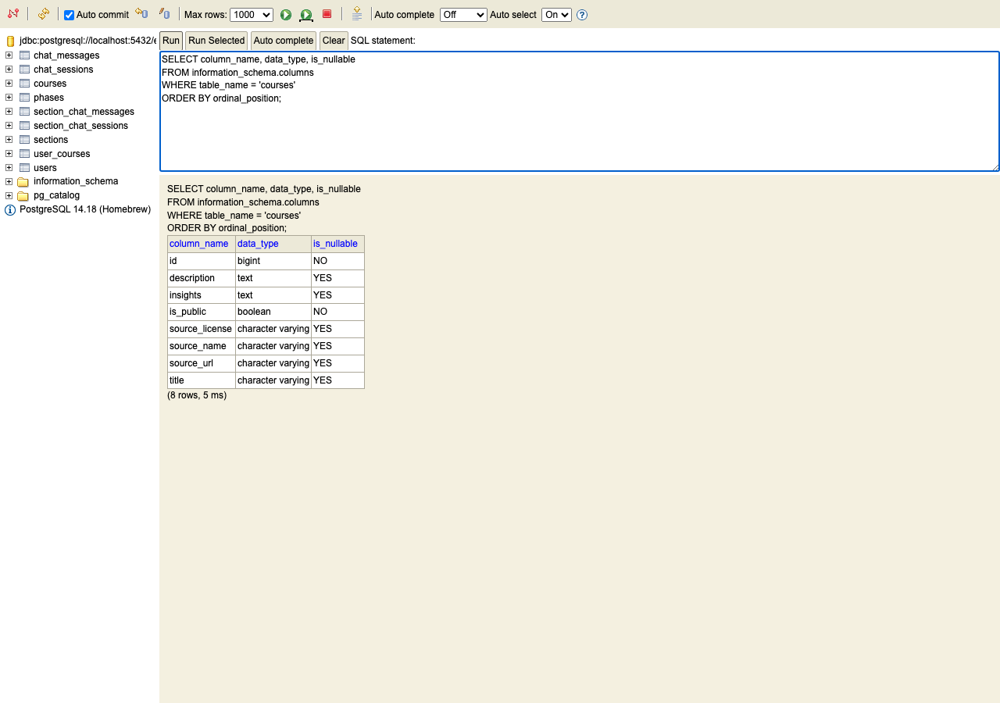
is_public boolean, NO (not-nullable) confirms the migration's three-step add-nullable / backfill / constrain-after sequence completed — Postgres refuses ADD COLUMN ... NOT NULL outright on a populated table, which is exactly why the script does it in three steps instead of one.
http://localhost:8080/h2-console.application-dev.yaml's datasource: Driver Class org.postgresql.Driver, JDBC URL jdbc:postgresql://localhost:5432/enlightenment, User Name ahaspace. Fill in Password: ahaspace, click Connect.SELECT column_name, data_type, is_nullable FROM information_schema.columns WHERE table_name = 'courses' ORDER BY ordinal_position;
This is exactly what scripts/week-18/002-course-public-and-source-fields.sql's final backfill UPDATE does to the real pilot course (and what CurriculumSeedRunner does at insert time on a fresh seed run, shown in the Setup section above) — reproduced here against a second, throwaway course row so the round trip is visible independent of the seed.
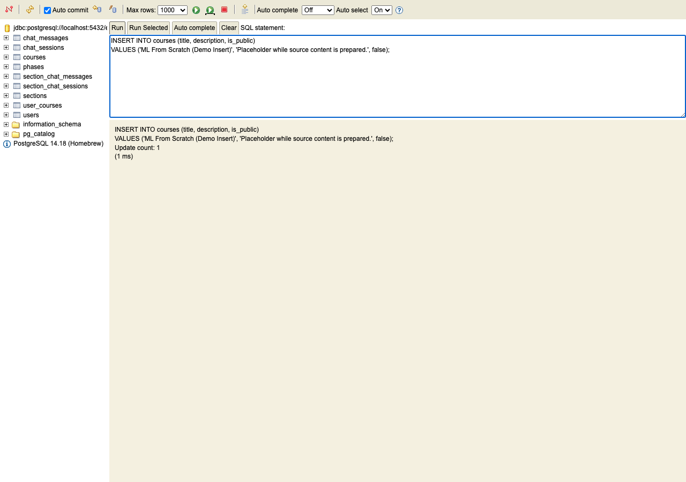
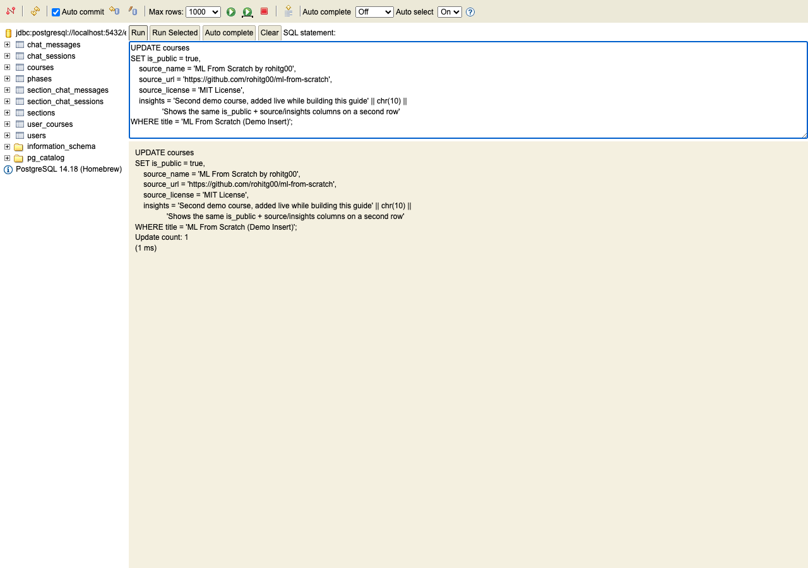
INSERT INTO courses (title, description, is_public)
VALUES ('ML From Scratch (Demo Insert)', 'Placeholder while source content is prepared.', false);UPDATE courses
SET is_public = true,
source_name = 'ML From Scratch by rohitg00',
source_url = 'https://github.com/rohitg00/ml-from-scratch',
source_license = 'MIT License',
insights = 'Second demo course, added live while building this guide' || chr(10) ||
'Shows the same is_public + source/insights columns on a second row'
WHERE title = 'ML From Scratch (Demo Insert)';Three rows after the steps above: the seeded pilot course (public, full source/insights), the private draft course used later for the 404/authenticated-contrast demonstrations, and the just-inserted demo row (public, its own source/insights). null in italics on the private row's source columns is exactly what an unattributed course looks like — those columns stay unset unless a course actually has an external source.
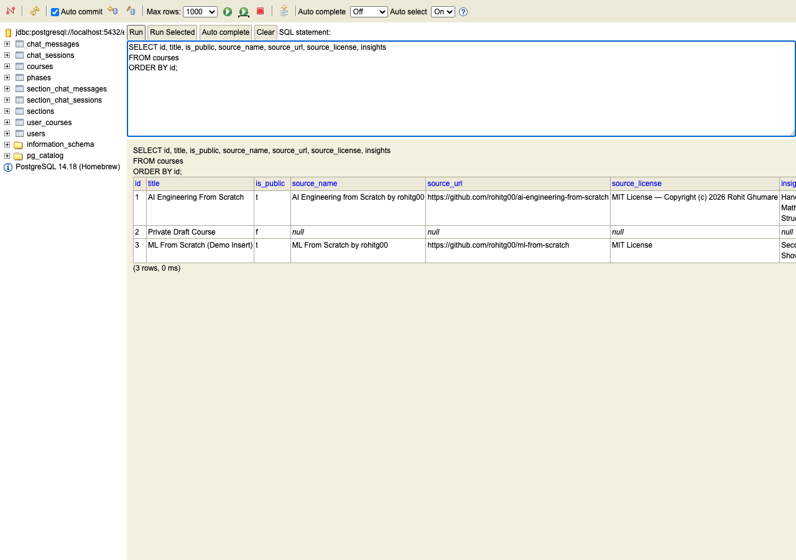
SELECT id, title, is_public, source_name, source_url, source_license, insights FROM courses ORDER BY id;
All four new routes live under /api/public/courses, mapped in a separate PublicCourseController so the "no auth required" surface stays visible in one file. Every card below is a real curl call against the running backend — real request, real response body, rendered into a card for readability (styled like a REST client, not one). A private-or-nonexistent course id resolves to the same 404 either way, by design: getPublicCourse/etc. all guard on findByIdAndIsPublicTrue, so a visitor probing course ids can never learn whether an id exists but is private, versus not existing at all.
GET /api/public/courses — list, filtered to public onlyReturns only the one course flagged isPublic = true — the private draft course inserted in the Data Layer section above does not appear, with no error and no indication it exists. No Authorization header sent or required.
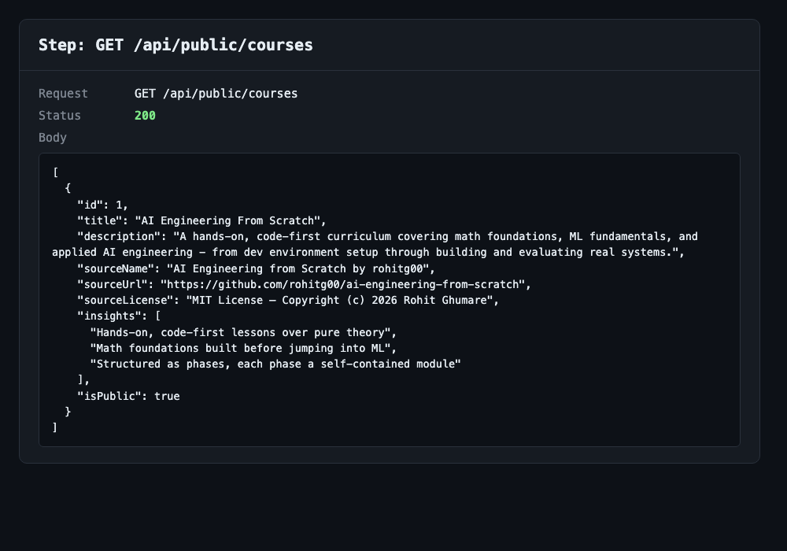
Only GET is permitted under /api/public/** — SecurityConfig's matcher is method-scoped on purpose, so this prefix can never accidentally grow a write path:
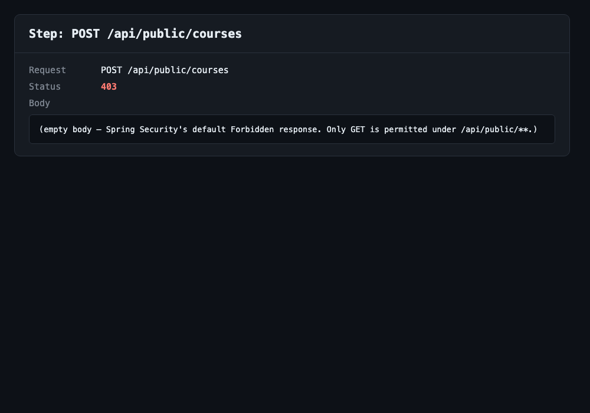
curl -s http://localhost:8080/api/public/courses
curl -s -w "\nHTTP %{http_code}\n" -X POST http://localhost:8080/api/public/coursesGET /api/public/courses/{id} — single course, 404 for privateCourse 1 (public) returns its full detail. Course 2 — the private draft course inserted earlier — returns exactly the same 404 body a nonexistent id would, never 401 or 403: the route is permitAll, so an unauthenticated caller cannot be rejected on auth grounds, only told the resource isn't there.
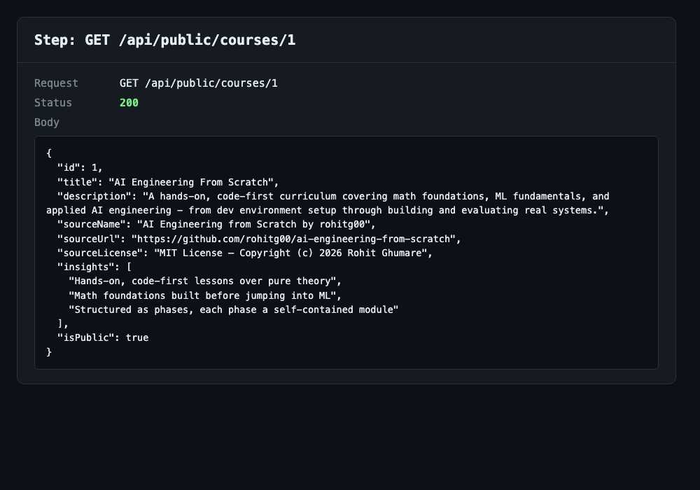
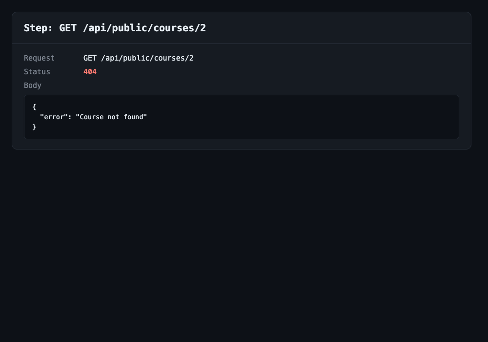
curl -s http://localhost:8080/api/public/courses/1
curl -s -w "\nHTTP %{http_code}\n" http://localhost:8080/api/public/courses/2GET /api/public/courses/{id}/phases — pre-sorted, 404 for nonexistentAll 3 pilot phases, sorted by orderIndex ascending (backend contract, no client-side sort). A nonexistent course id (999) 404s the same way the private course did above.
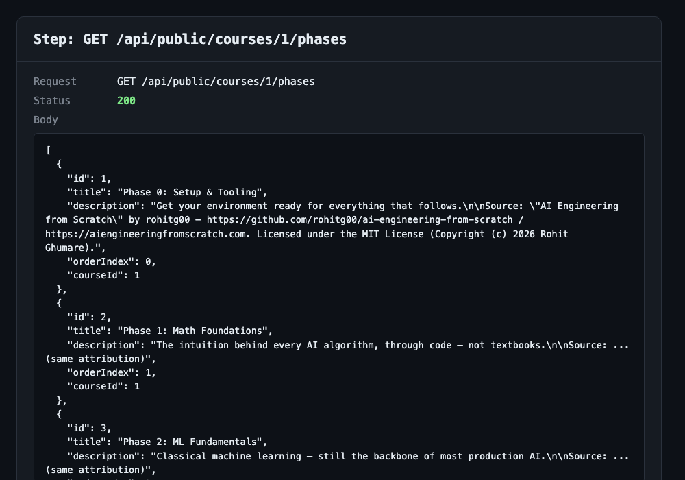
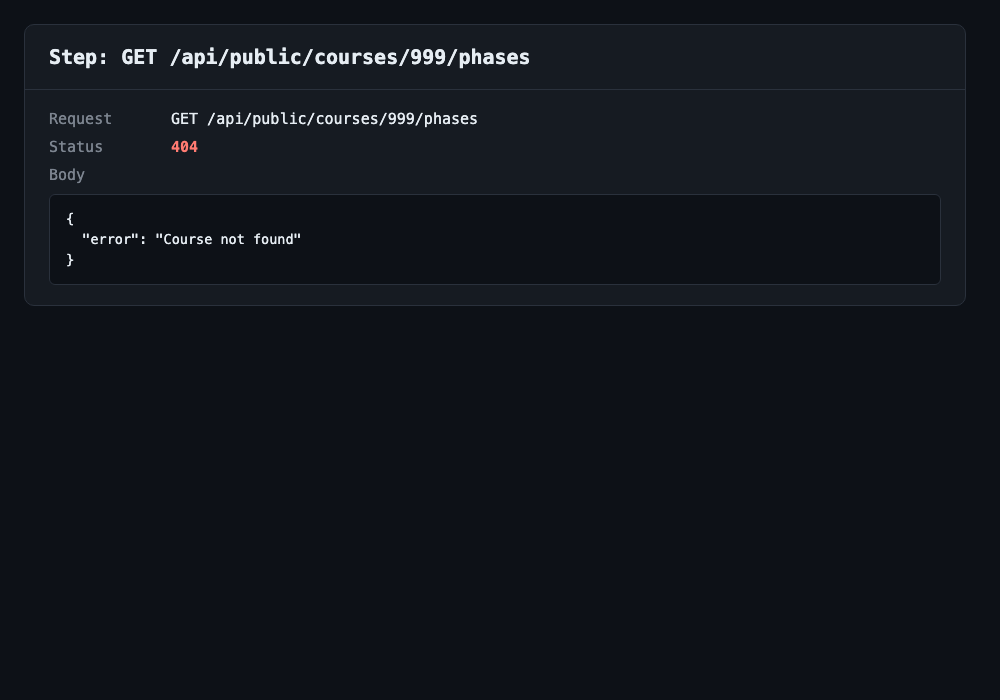
curl -s http://localhost:8080/api/public/courses/1/phases
curl -s -w "\nHTTP %{http_code}\n" http://localhost:8080/api/public/courses/999/phasesGET /api/public/courses/{id}/phases/{phaseId}/sections — 404 for a nonexistent phasePhase 1 ("Dev Environment" onward) returns all 12 sections for a public course. A phase id that doesn't exist under that course 404s with the same "not found" shape as the course-level checks above — there's no way, from the response alone, to tell a bad phase id apart from a bad course id.
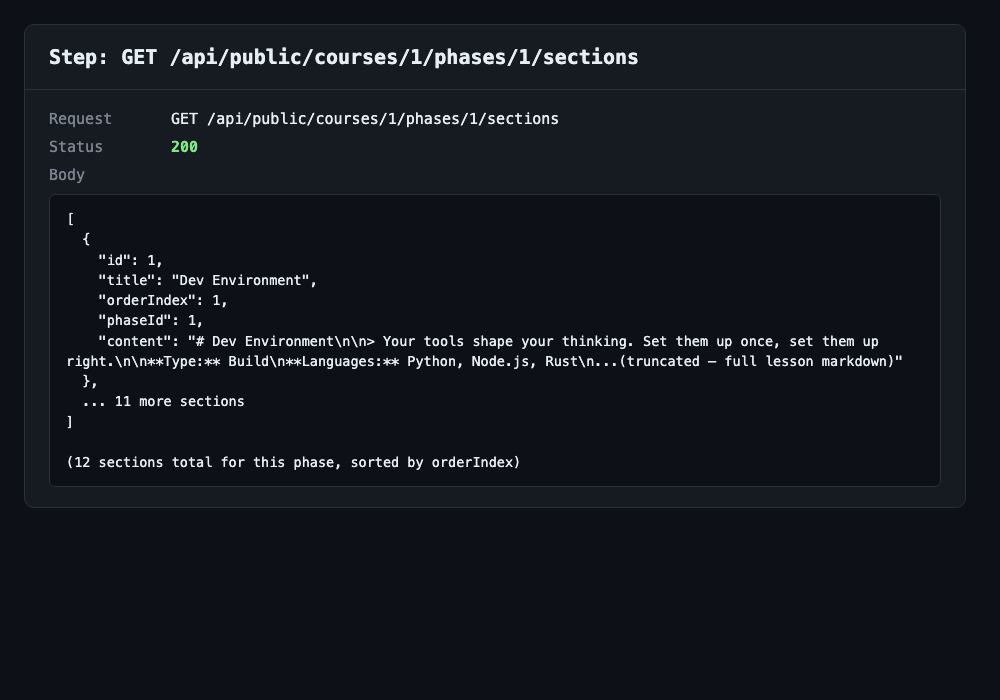
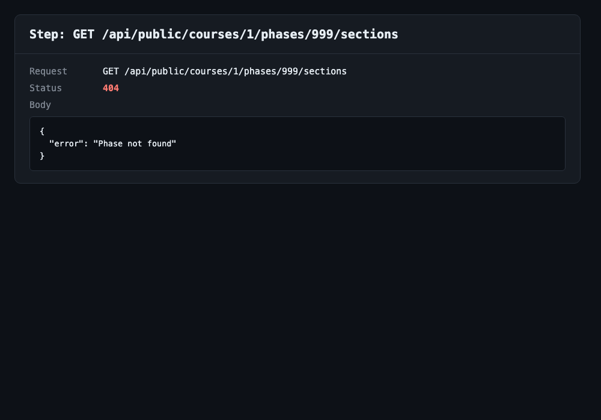
curl -s http://localhost:8080/api/public/courses/1/phases/1/sections
curl -s -w "\nHTTP %{http_code}\n" http://localhost:8080/api/public/courses/1/phases/999/sectionsGET /api/courses — same path, wider DTONo new route on CourseController — it responds at exactly the same path as every prior week. What changed is the shape of every course in the array: isPublic, sourceName, sourceUrl, sourceLicense, insights are now present on every entry (with source fields null/insights [] for a course with no attribution, as the private draft course shows). Note the wire key is exactly isPublic, not public — CourseDto pins it with @JsonProperty("isPublic") specifically because Lombok's default getter naming for a primitive boolean isPublic would otherwise serialize it as "public".
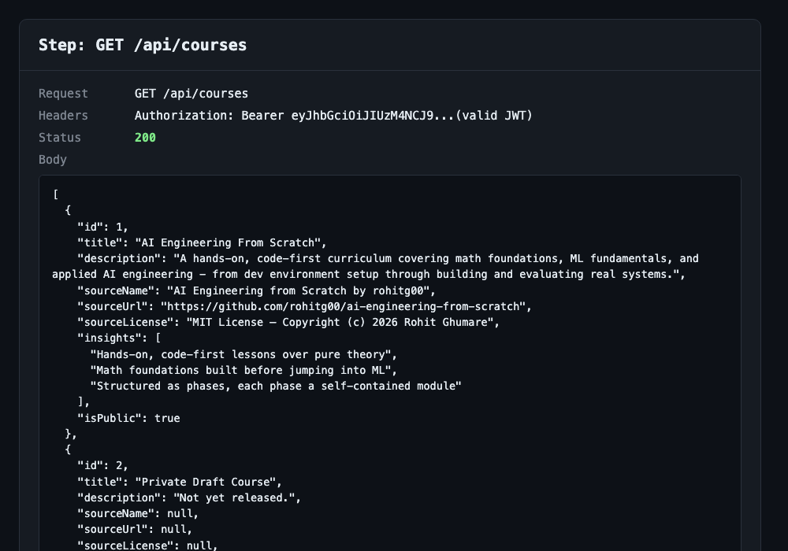
And the existing 403-when-unauthenticated behavior is completely unchanged — this route was never permitAll and still isn't:
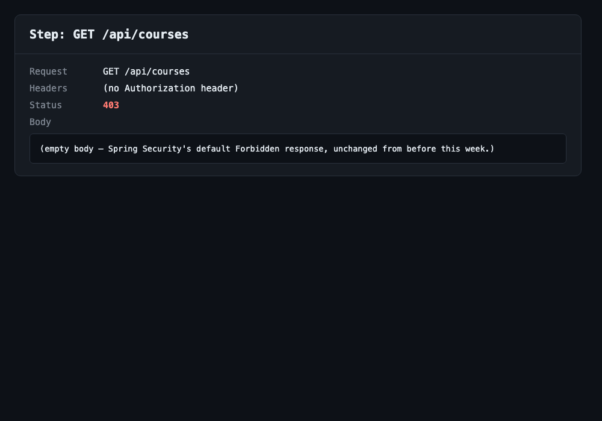
curl -s -X POST http://localhost:8080/api/auth/register \
-H "Content-Type: application/json" \
-d '{"email":"demo_tester@example.com","password":"DemoPass123!"}'curl -s http://localhost:8080/api/courses -H "Authorization: Bearer <token from above>"
curl -s -w "\nHTTP %{http_code}\n" http://localhost:8080/api/coursesEverything below is one continuous click-through as a logged-out visitor, captured with Playwright against the real npm run dev frontend and the real backend from the sections above — no mocked responses anywhere in this section.
/App.jsx's old inline Home() is gone; / now renders LandingPage.jsx. Logged out, it shows a one-sentence product pitch, a 3-item feature strip, a "Browse the public course" link straight to /courses, and one consolidated CTA block — Sign In as the visually primary action, Register secondary. The nav bar above it carries only the brand link; no Sign In/Register there anymore.
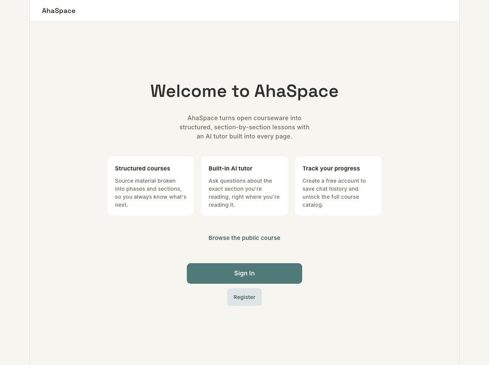
http://localhost:3000/.CourseList.jsx fetches coursesBase(isAuthenticated), which resolves to /api/public/courses when logged out. Heading and subtext ("Public courses" / "Sign in to see the full course catalog") make the demo scope explicit rather than looking like a bug or an empty catalog.
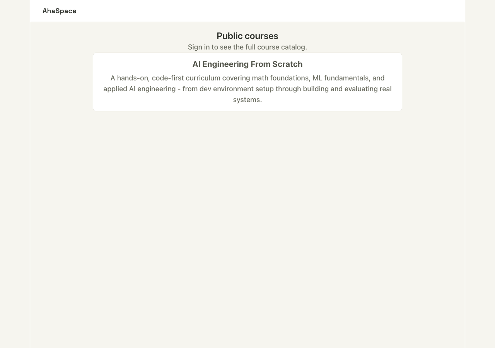
/courses directly).CoursePhases.jsx fetches course metadata via fetchCourseMeta() (which hits GET /api/public/courses/{id} when logged out) in parallel with the phase list, under one loading state. The header block renders the course title as an <h1>, the description as prose, the source name as a link (target="_blank" rel="noopener noreferrer") to sourceUrl with the MIT license line as small print beneath it, then the 3 insights as a bulleted list — all of it sourced straight from the CourseDto fields verified in the Endpoints section above, not hardcoded.
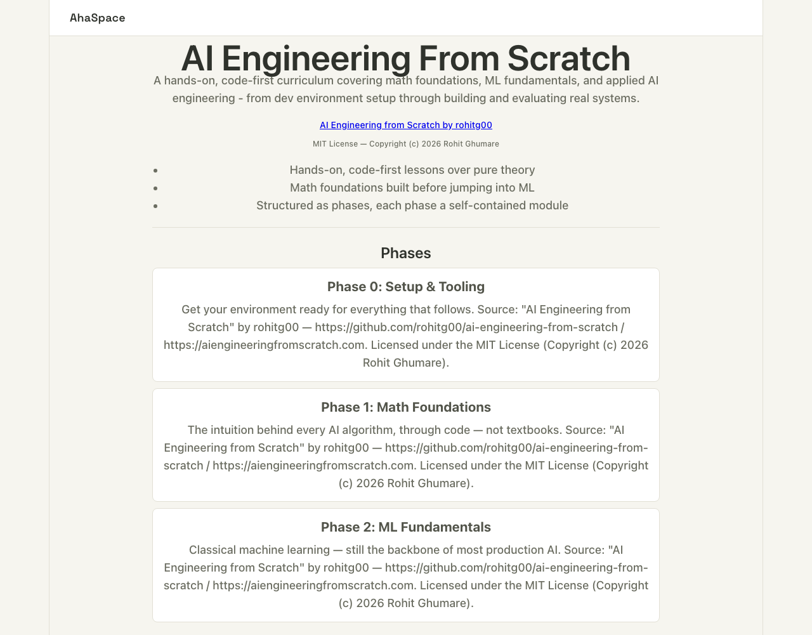
PhaseSections.jsx, same public/authenticated URL swap, unchanged rendering otherwise: 12 sections for "Phase 0: Setup & Tooling", numbered by orderIndex.
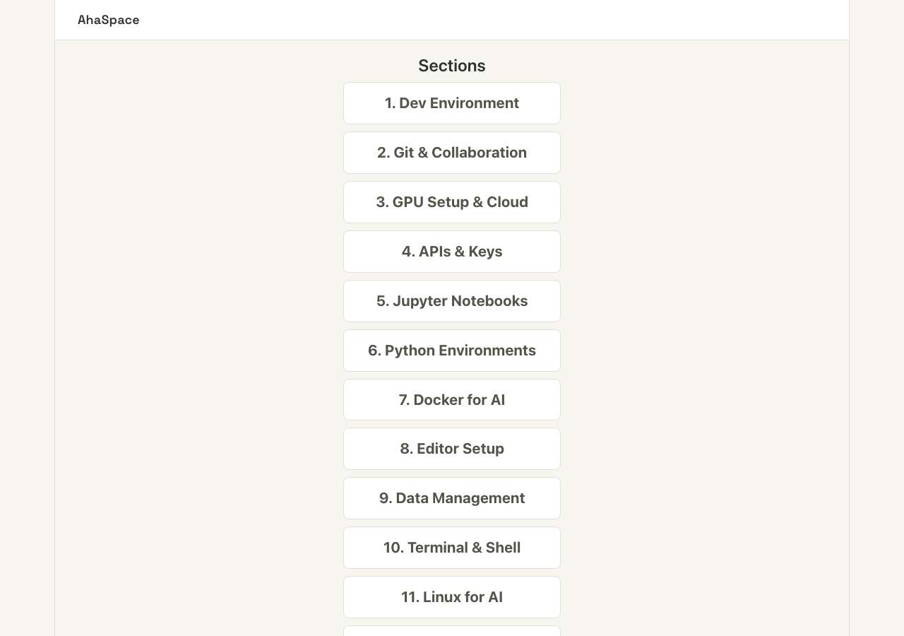
This is the crux of the "visitor sees the chat feature exists" requirement: SectionAssistantPanel renders its full UI — heading, message list, input, Send button — for a logged-out visitor exactly as it would for a logged-in one. The only difference is invisible at this point: the useEffect that would call loadSessions() returns early when !isAuthenticated, and ChatToolbar (session history) is not rendered at all, since history is meaningless with no account to attach it to.
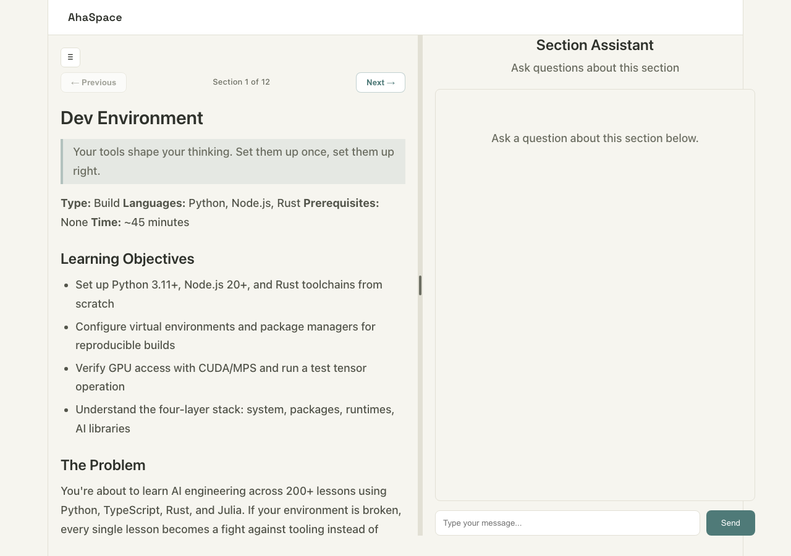
Typed a real message ("What is this section about?") into the input and clicked Send. sendMessage's very first check is if (!isAuthenticated) — when true, it calls setShowSignInPrompt(true) and returns before the function ever reaches its fetch(basePath, ...) call. No optimistic user-message bubble is appended either; the typed text stays exactly as typed in the input, visible behind the modal below.
page.on("request", ...) listener was attached before the click, and the full list of every request the page fired in the second after clicking Send was captured and filtered for anything containing /chat. The result was an empty list — CHAT-RELATED REQUESTS: [] — captured from the real running page, not asserted from reading the source. To check this by hand instead: open browser devtools' Network tab, clear it, click Send, and confirm no new request appears — especially none to .../sections/{id}/chat or .../chat/sessions.
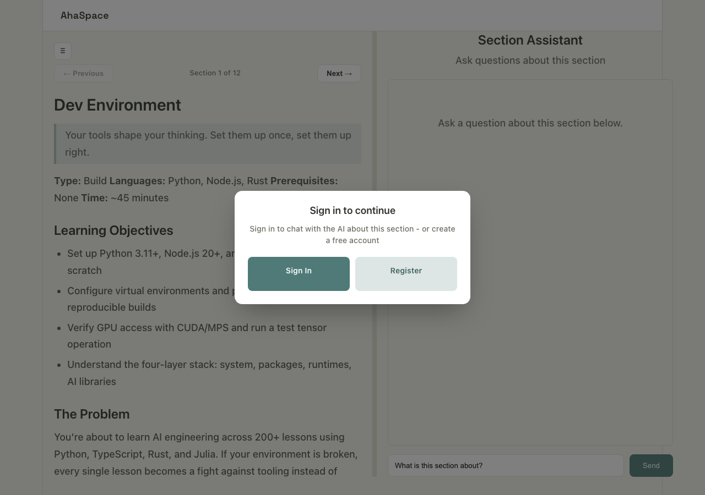
Same browser flow, same course, same section — this time logged in as a real registered account, to show exactly what changes and what stays identical. Registered via POST /api/auth/register, logged in through the real two-step Login.jsx form.
Logged in, the nav bar shows AI Chat / Courses / Logout, same as before this week — NavBar.jsx's authenticated branch is untouched. The landing page's authenticated branch is also untouched: a plain "Welcome back" greeting with the three action buttons.
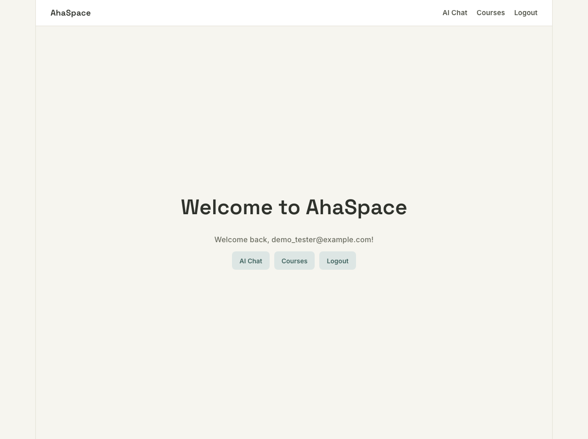
/register) or log in (/login) with any account, land back on /.CourseList.jsx now hits GET /api/courses (the full, authenticated list) instead of the public endpoint. Both the public pilot course and the private draft course inserted in the Data Layer section appear here — proving the authenticated path genuinely sees more than the public one, not just a differently-labeled version of the same data.
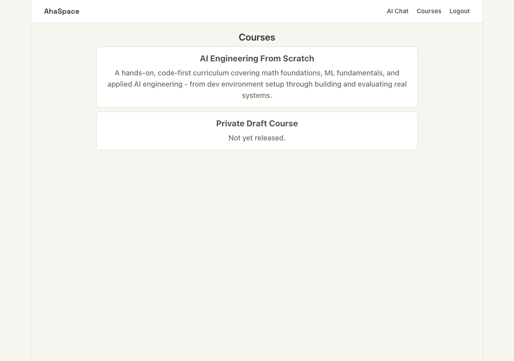
/courses.Same course, same header block (title/description/source/insights), same phase list — fetchCourseMeta() just took the authenticated branch this time (GET /api/courses list, matched client-side by id) instead of the public one. Visually indistinguishable from the logged-out version in the section above, which is the point: the public and authenticated paths render identically, they just source data differently.
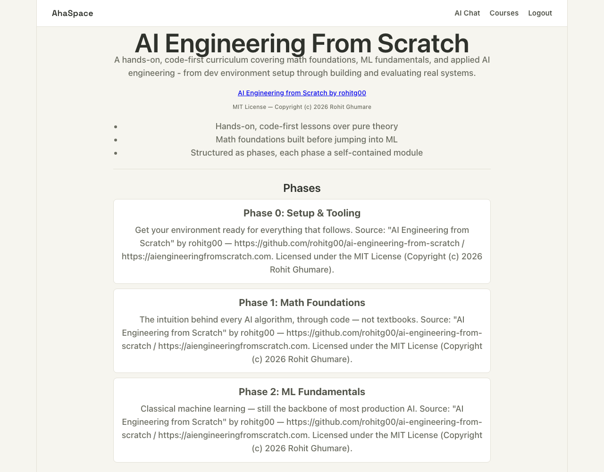
Before sending anything, the one visible difference from the logged-out screenshot in step 12 appears: a ChatToolbar with "+ New Chat" and a "History" dropdown, because isAuthenticated is now true. Then the real test: typed a message and clicked Send. This time sendMessage runs its full path — POST to /api/courses/{courseId}/phases/{phaseId}/sections/{sectionId}/chat with a real Bearer token, a real call to Gemini (gemini-2.5-flash-lite, the same key already configured in application-dev.yaml), and a real reply rendered in the message list with a model tag and timestamp.
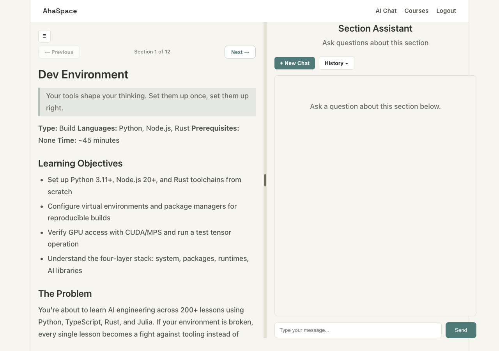
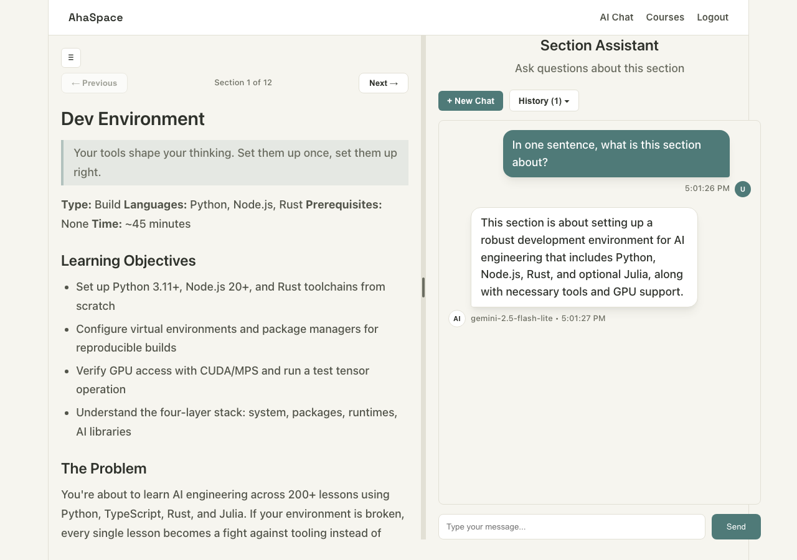
"History (1)" in the toolbar after the send is the session actually persisting server-side — this is the same SectionChatController/GeminiProvider path Week 17 shipped, completely untouched by this week's change, exercised end to end for real.
gemini.api.key in application-dev.yaml — already configured in this repo's checked-in dev config).Week 17's testing guide was never actually committed to this branch — it exists only in a git stash on main — so there is nothing to check docs/testing/week-17/ for or carry forward from it. Everything below is specific to what actually came up while building this week's guide.
/api/public/courses returns []Two independent causes produce the same symptom. First: the seed profile was not included alongside dev — CurriculumSeedRunner is @Profile("seed") and simply doesn't exist as a bean otherwise, no error, no log line, nothing. Second: curriculum.source-path was not passed — without a default anywhere in the YAML config, Spring fails placeholder resolution for the @Value field at startup, which surfaces as a bean-creation error mentioning curriculum.source-path could not be resolved.
The following 2 profiles are active: "dev", "seed" (not just "dev"), and that -Dspring-boot.run.arguments=--curriculum.source-path=... points at a real checkout of ai-engineering-from-scratch with a phases/ directory inside it.Hit this directly while building this guide: Docker Desktop's daemon wasn't running, so Postgres was started via a native Homebrew install instead of this project's docker-compose.yml — which meant the ahaspace role and enlightenment database the compose file would normally create automatically didn't exist. Connecting with psql -U ahaspace -d enlightenment failed with FATAL: role "ahaspace" does not exist.
psql -h localhost -p 5432 -d postgres -c "CREATE ROLE ahaspace WITH LOGIN PASSWORD 'ahaspace';" psql -h localhost -p 5432 -d postgres -c "CREATE DATABASE enlightenment OWNER ahaspace;"Using
docker compose up -d from a running Docker daemon avoids this entirely — the Postgres image's POSTGRES_DB/POSTGRES_USER/POSTGRES_PASSWORD env vars in docker-compose.yml create both automatically on first start.Not a bug: this is the exact, deliberate behavior decisions.md calls for. GET /api/public/courses/2 (the private draft course) and GET /api/public/courses/999 (an id that doesn't exist at all) return byte-identical 404 bodies. There is no way, from the public API alone, to tell "this course exists but is private" apart from "this course doesn't exist" — that's the entire point of guarding every public method on findByIdAndIsPublicTrue rather than checking existence and visibility separately.